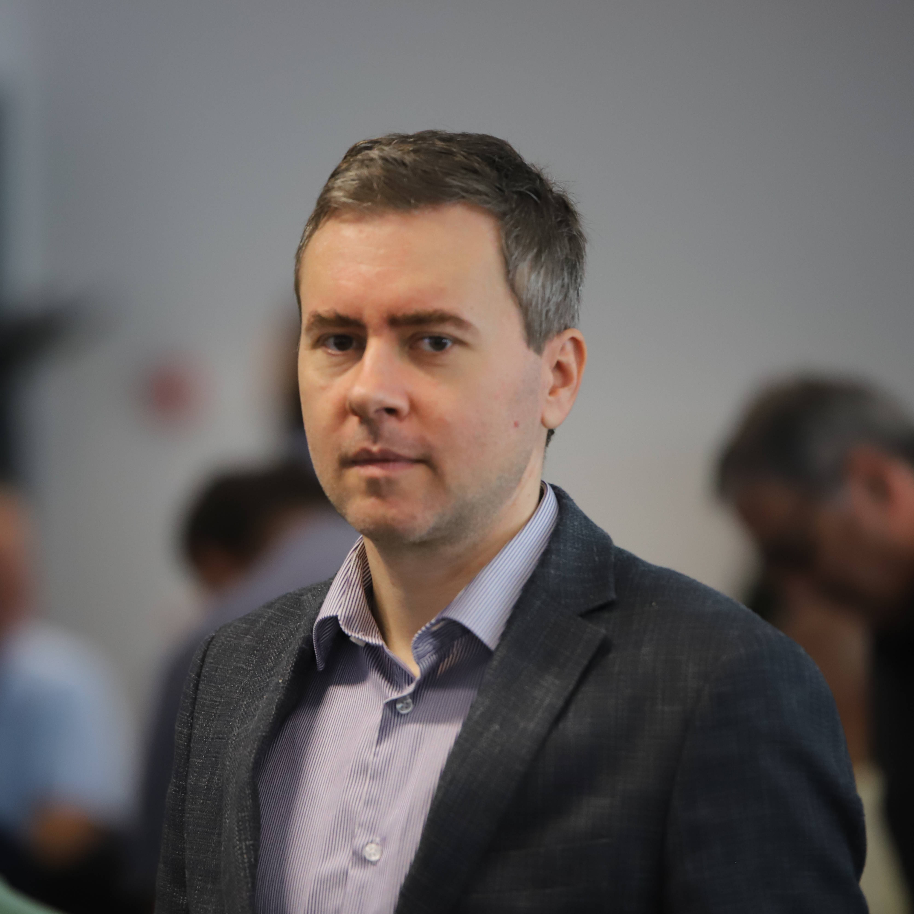

"Wenn du es nicht einfach erklären kannst, verstehst du es nicht gut genug." - Albert Einstein
"Der größte Fehler, den Sie im Leben machen können, ist, ständig Angst davor zu haben, einen Fehler zu machen." - Elbert Hubbard
"1. Mache die Anforderungen weniger dumm. 2. Versuche, einen Teil des Prozesses zu löschen. 3. Vereinfache oder optimiere. 4. Beschleunige den Zyklus. 5. Automatisiere." - Elon Musk
Über mich
Fleißiger und neugieriger Elektronik- und Software-Ingenieur mit einer breiten Palette von Erfahrungen.
Meine Liebe zum Lernen, zur Problemlösung und meine vielfältige Hintergrund in Ingenieurwesen, Programmierung und Management machen mich vielseitig in jedem Team.
Für tiefere Einblicke in meine Denkweise und meine Einstellung können Sie meine ausgewählte Lesung erkunden.
Meine Liebe zum Lernen, zur Problemlösung und meine vielfältige Hintergrund in Ingenieurwesen, Programmierung und Management machen mich vielseitig in jedem Team.
Für tiefere Einblicke in meine Denkweise und meine Einstellung können Sie meine ausgewählte Lesung erkunden.
Karriere
Aktuelle Erfahrungen (in den letzten fünf Jahren):- Lehrer: Ich habe mich auf das Unterrichten von Kursen in den Bereichen Mikrocontroller, Embedded Systems, Robotik und Automatisierung spezialisiert.
- Regionalentwicklung: Ich spielte eine wichtige Rolle bei der Gründung und Entwicklung des Regionalen Kompetenzzentrums für Mechanik und Mechatronik.
Aktuelle Ausbildung: Im letzten Jahr habe ich mich mit Online-Bildung und
Programmierung beschäftigt,
mit Schwerpunkt auf Data Science, KI, ML und der Implementierung von LLM.
Bisherige Tätigkeiten:
Ich habe vielfältige Erfahrungen in den Bereichen Management, Vertrieb und Technik gesammelt.
Interessen
Ich bin auf der Suche nach Kooperationen für Projekte, die neue Technologien nutzen und
implementieren.
Tiefes Eintauchen und Engagement mit ganzem Herzen für spannende Vorhaben sind für mich selbstverständlich.
Meine erste Wahl ist ein hybrider Arbeitsmodus, aber auch die andere Optionen sind für mich denkbar. Bei Bedarf bin ich bereit, nach Süddeutschland, Österreich oder in die Schweiz zu ziehen.
Tiefes Eintauchen und Engagement mit ganzem Herzen für spannende Vorhaben sind für mich selbstverständlich.
Meine erste Wahl ist ein hybrider Arbeitsmodus, aber auch die andere Optionen sind für mich denkbar. Bei Bedarf bin ich bereit, nach Süddeutschland, Österreich oder in die Schweiz zu ziehen.